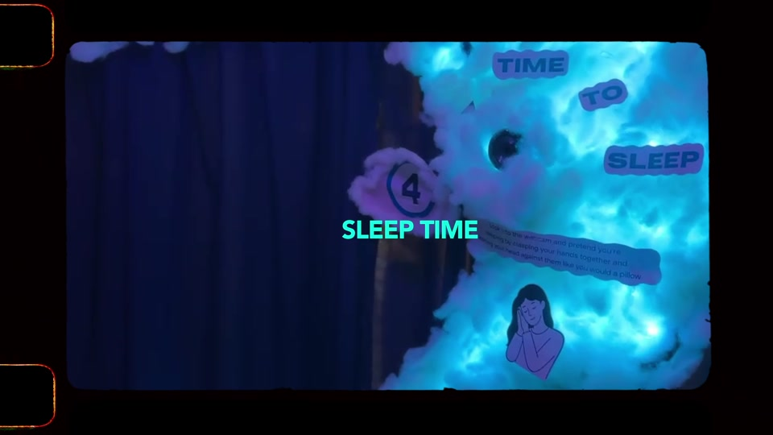
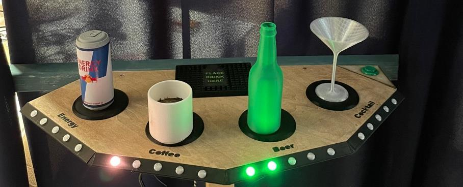
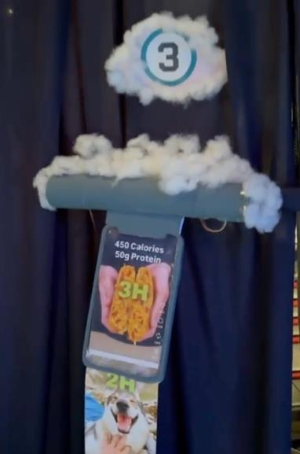
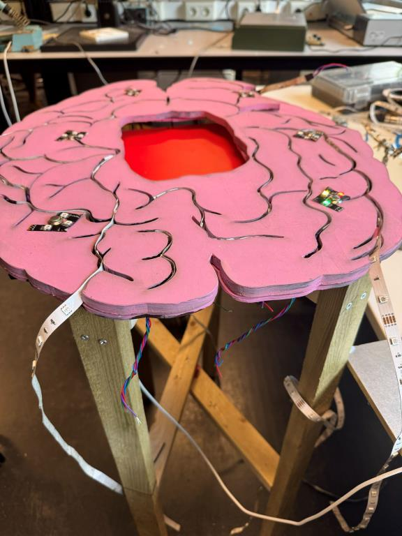
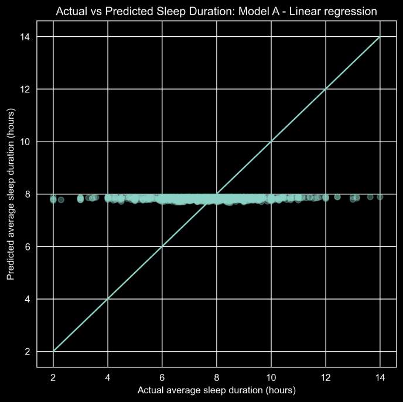
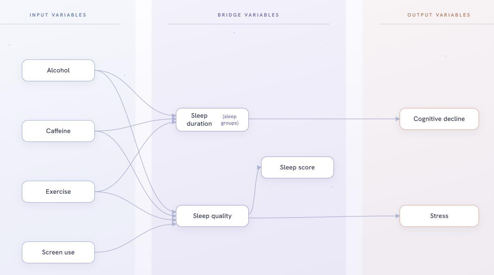

A collaborative installation · 14 people
Time to
Sleep
An installation that begins with the habits of a day and follows them into a night of sleep.
Our installation invited visitors to walk through their habits, make a sleep gesture, and explore a possible next morning.
Follow the experience ↓
The visitor journey
A day, a night,
and the next morning
We wanted to make a subject that can feel distant more tangible. Instead of filling in a form, visitors moved between physical stations. Each one added a piece of the story.
The installation offers a research-informed representation for reflection, not a diagnosis or a validated prediction of an individual’s health.
-
01 / During the day
Choose a drink
The first station used physical drink objects to enter caffeine and alcohol. Lights on the table gave feedback as visitors scanned their choices.

The drinks station · project documentation -
02 / Moving
Set the weight
A small weight stack made exercise time physical: visitors selected their weekly hours with a pin, like choosing a weight at the gym.
A closer look at the real interaction →
Exercise station · silent excerpt from the project footage -
03 / Scrolling
How long on the phone?
Visitors pulled a scroll from a phone-shaped display to enter screen time. A rotary encoder translated the movement into an amount of time.

The screen-time station · project documentation -
04 / Time to sleep
A gesture under the clouds
With the inputs collected, a sleep gesture triggered the transition. Light and sound helped carry the visitor into the next phase.
The sleep transition -
05 / The next morning
A little memory challenge
A sequence game translated the calculated cognition value into the length and timing of a pattern. An NFC card could then link visitors to an overview of their experience.

Building the game table · project documentation
My contribution
Connecting the data
to the experience
The group helped find possible datasets at the start, and I did the data processing. I worked with the rest of the group to get the resulting values into the installation.
The stations, electronics, visuals, sound and game came together through the work of the whole team.
The data story · an early attempt
When the first model kept choosing the average
My first approach was to predict how long someone would sleep, but the model kept giving answers close to the average. By the time I found that out, the installation was already taking shape, so I had to find another way to work with the data we had.
I switched to a decision tree that used caffeine, alcohol and exercise to estimate a sleep-duration group. For some of the other connections, I used relationships that had already been reported in research papers.
The data we could access had its limits, but I was happy I’d found a way to make it work and let the rest of the installation shine.
The diagonal is the ideal line; the dots gathered near the average instead.

The revised data story
Two paths, one installation
The final structure used two distinct routes. Sleep quality fed a score and a separate stress estimate; sleep duration fed the cognition mapping for the memory game. The sleep score did not feed that cognition model.

Quality → score & stress. A paper-derived sleep-quality estimate fed both a sleep score and a separate stress estimate. Stress was used in the sound and neuron-wall response.
Duration → cognition. A decision tree grouped sleep duration from caffeine, alcohol and exercise. A research-based mapping connected the group to a value for the memory game.
The PSQI-based calculation used an assumed baseline for the installation. The report does not provide quantitative validation of the final models as individual health predictions.
Trying it with visitors
What five people told us
The small post-session survey suggested that the physical objects were easier to understand than the connection between choices and the memory-game difficulty. Three participants mentioned confusion at the drinks station.
A useful next step would be to make that connection easier to notice. This was a small evaluation; it does not establish lasting changes in sleep habits or the accuracy of the models.
4.6Physical objects and inputs felt intuitive
3.2Noticed the effect of inputs on game difficulty
Reported averages from five responses; the report does not specify the scale.A look around
The installation in motion
Here is a short clip from the shared installation, from the stations to the game.
Team & sources
Time to Sleep team: Adi Soebdhan, Arthur Godthelp, Daniel Chiapparini, Gabriela Llieva, Gijs Wiltink, Kristina Kapperud, Lars Gerritsen, Tzuling Lin, Lorenzo Ranise, Luca Pastor, Luís Antônio de Albuquerque Hollanda, Nadya Bildoy, Thibaud Pastor and Urtė Valeisate.
The team's data work drew on NHANES, research on electronic device use and sleep quality and sleep duration and cognition, and the Sleep Health and Lifestyle dataset.